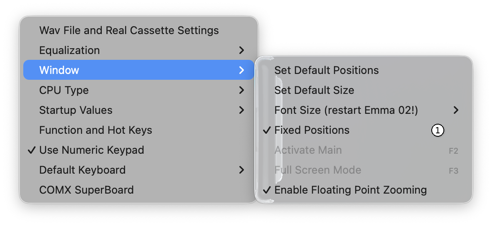

Window Settings
Window settings can be changed using the menu options shown below (1).

- Set Default Positions: Reset all Emma 02 windows to their default screen positions.
- Set Default Size: Reset the Emma 02 GUI to its default size.
- Font Size: Select Standard or Large GUI font size. Restart Emma 02 to apply the change.
- Fixed Positions: Keep GUI and computer windows at their current positions. When disabled, positions are managed by the operating system.
- Activate Main (F2): Activate the main computer window.
- Full Screen Mode (F3): Toggle full screen mode for the emulated computer.
- Enable Floating Point Zooming: See the Zoom Level and Full Screen Mode section.